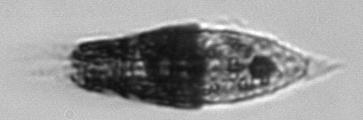

<div><h1>Tiarina_fusus</h1></div>
-very distinct body shape with cilia all around-typically seen in this orientation-Length: 80 (60-90) µm<br>

<div style="display: inline-block">
IFCB1_2007_326_031622_00692<br>

</div>


<div style="display: inline-block">
IFCB1_2008_319_005351_00205<br>

</div>


